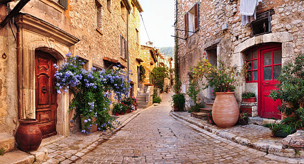
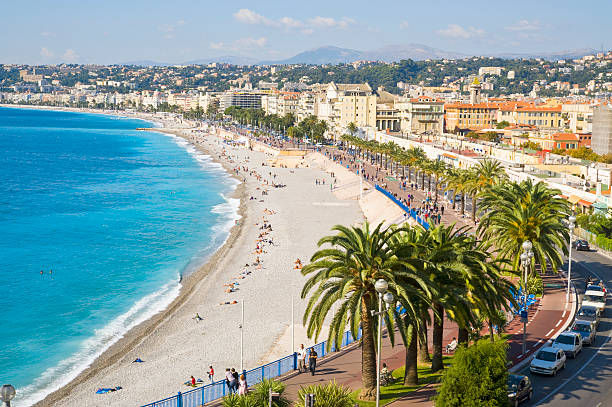

Cidade de Nice
França
Nice é uma pequena grande cidade muito particular e com atrativos universais:
tem sol praticamente o ano inteiro, apresenta lugares recheados de história e a sua localização é privilegiada.
Nesse site você vai encontrar tudo sobre a cidade, desde sua história até sua gastronomia. Vamos lá?
Sua história...
Antes de se tornar uma ciadade francesa Nice era de domínio italiano mais precisamente no Reino da Sardenia, só a partir de 1860
essa cidade se tornou território frances, atuava como fronteiriça com vocação militar e
marítima até o século XVIII. A cidade se
desenvolveu no século XIV, a partir do antigo-Nice, onde há a maioria da população e das atividades econômicas.
Localização?
A cidade de Nice é a 2ª maior da região Provença-Alpes-Côte d'Azur, uma região muito bonita
e muito bem localizada, pois fica perto do mediterrâneo, dos Alpes e da Itália, Suíça e Áustria…
Essa cidade cheia de palmeiras fica na famosa Côte d'Azur, a 30 km da fronteira com a Itália,
perto da cidade de Mônaco, entre o mar e as montanhas. É a quinta cidade mais populosa da França.

Faz frio ou calor?
Por ser uma cidade litorânea, o período ideal para ir para Nice é no verão. Apesar disso,
o inverno também pode ser bastante agradável – embora talvez o tempo esteja frio demais para curtir a praia.
É raro ter chuvas no verão, podendo ter 1 ou 2 dias de chuvas durante todos esse período.
Normalmente a temperatura passa dos 20ºC e em boa parte do tempo chega aos 30ºC. Já no inverno fica entre 5 e 15ºC e dificilmente você vai ver neve por lá.
